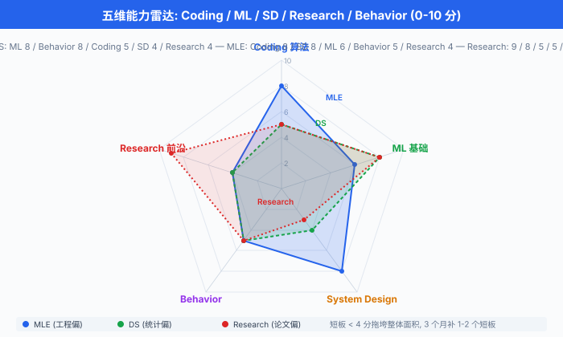

面试全景与准备心法¶
一句话总结：这一章不堆题库——把 AI 系统的面试拆成 5 维度 + 3 月路径 + 反脆弱心态，用叙事而非题海的方式讲明白，让你少走半年弯路。
🗺️ 本章导览¶
- 本章覆盖 AI 系统实战面试：全景 + 系统设计 + 编程 + 行为面
- 01. 面试全景与准备心法 (本节): 5 维度、3 月路径、五维雷达、反脆弱
- 02. ML 系统设计 8 步框架：需求澄清到部署迭代的全流程
- 03. 典型题深度演练 · 推荐/搜索/排序: YouTube/IG/Google/TikTok 完整 mock
- 04. 典型题深度演练 · 反欺诈/风控/异常检测：信用卡欺诈/spam 分类
- 05. 典型题深度演练 · 对话与 LLM 系统：客服机器人/RAG 系统
- 06. 算法与编程面试实战: LeetCode 分组 + ML 编码题
- 07. 行为面 + 项目讲述 + Offer 谈判: STAR、复盘、谈薪
如果你正在翻"刷完 LeetCode 800 题就能拿 AI offer"的旧地图，先把它撕了。 现在 AI 工厂招人的方式，和 2018 年那个 LeetCode 一统天下的年代相比，已经变了。 这一节先把地图更新到 2026.
0. 撕掉旧地图：为什么"刷 LeetCode 进 AI 厂"已过时¶
先把一个流传最广、误人最深的过气建议摆到台面上:
"刷完 500 道 LeetCode + 背 ML 八股，就能进大厂."
这条建议在 2015-2018 年的 SDE 招聘里也许半对——那时 FAANG 的标准流程就是 4-5 轮算法 coding，外加一轮系统设计。 到了 2026 年，AI 相关岗位的考核维度已经横向扩张到 5 个，任何一个轴塌掉，整体就垮。 任何把它简化成"刷题"的指南，都在用旧地图骗你走新路。
把视野拉高一点看全局:
- 岗位在分叉. 2018 年的"AI Engineer"基本等于"会调 PyTorch 的 SDE". 2026 年招聘 JD 里，Data Scientist / ML Engineer / Research Engineer / ML Infrastructure (MLOps) / ML Solutions Engineer 是五个不同的物种——简历长得不一样，面试考的不一样，入职后做的事不一样。 一份"通用 AI 八股"已经无法同时打穿五条路。
- ML System Design 从选修变成必修. Ali Aminian 与 Alex Xu (ByteByteGo 创始人) 合著的 Machine Learning System Design Interview 上下两卷，把 ML 系统设计 (ML System Design) 从"加分项"提到了"标配项"——Meta / Google / 字节 / OpenAI 的资深岗 (E5+/L5+/P5+) 几乎必考 ML System Design，而且不再只考"如何搭一个推荐系统"，而是考 ML 服务的全链路：训练-部署-监控-回滚 (Ch25/02 展开).
- 行为面被严重低估. 字节 / 阿里 / 腾讯 / 百度的 HR 终面和 VP 轮，决定要不要发 offer 的最后一道关往往不在算法，而在项目讲述——你能不能把一段经历讲成有数据、有决策、有取舍的故事。 很多人算法做对了，行为面一句"遇到的最大困难"答得稀碎，直接被降级。
- 前沿知识从"加分"变"门槛". 2024 年之后，不聊一聊 Transformer / RAG / Agent 的 AI 岗位面试，基本只剩"老古董模型工厂"或内部工具岗位。 arXiv 周报成为常态。
所以，这一章把整个面试拆成 5 维度，用 3 个月路径图、五维雷达图、反脆弱心态，把准备策略重写到 2026.
1. AI 岗位的 5 种分类：选路比刷题重要¶
投简历之前，最重要的一件事是搞清楚你要投的是哪条路. 写一份"通用 ML 简历"海投，等于把同一支箭射向五个不同的靶子。 下面这张表不是百科条目，是过来人踩过的坑的总结——每个岗位的面试侧重点，都不同:
| 岗位 | 英文 / 简称 | 核心工作 | 面试重点 | 适合人群 |
|---|---|---|---|---|
| 数据科学家 | Data Scientist (DS) | A/B 测试 (A/B Test)、业务分析、统计建模、可视化 | 统计、因果推断、SQL、商业 sense | 统计 / 经济 / 应数背景 |
| 机器学习工程师 | ML Engineer (MLE) | 训练-部署-监控全链路，端到端交付 | 编码、系统设计、模型上线 | SDE 转 ML，工程功底强 |
| 研究工程师 / 研究科学家 | Research Engineer / Research Scientist | 论文复现、提出新方法 | 论文阅读、实验设计、研究深度 | PhD / 顶会一作 / 强理论 |
| ML 基础设施工程师 | ML Infrastructure / MLOps | 平台工具 (Ray / vLLM / Triton / Kubeflow) | 分布式系统、GPU 优化、平台设计 | 分布式系统背景 |
| ML 解决方案工程师 | ML Solutions Engineer | 售前、客户对接、PoC 落地 | 沟通、需求翻译、行业 know-how | 喜欢跟人打交道 |
几个过来人的忠告:
- DS ≠ MLE. DS 在国内大厂 (字节 Data 团队 / 阿里商业分析部 / 美团策略) 普遍要求统计+商业, MLE 在同公司算法平台 / 推荐中台，要求工程+ML. 简历如果写"我做实验也写代码"，投两边都失败——HR 看不出你的核心价值。
- Research 在大厂只是少数岗位. 字节 AI Lab / 阿里达摩院 / 百度研究院 / 腾讯 AI Lab 的 Research 岗竞争激烈 (PhD 起步)，不要把 Research 当成 MLE 的"高级版".
- MLOps 缺口巨大. 2026 年大厂最缺的不是"训模型的"，而是能把模型塞进生产、扛住 1 万 QPS、监控告警不爆炸的 MLOps. 学历门槛低于 MLE，收入与 MLE 持平，但需要扎实的分布式系统底子 (Ch14 算法 + Ch16 系统设计).
- Solutions Engineer 是被忽视的"年包百万"路线. 国内"AI 解决方案"岗在火山引擎 / 阿里云 / 腾讯云 / 百度智能云需求大，主要看沟通和行业经验，适合 PhD 不想写代码但想继续用 ML 的人。 缺点：出差多，节奏比 MLE 快。
2. 典型面试流程：大厂怎么面你¶
不管是 Meta / Google / 字节 / 阿里，大体流程都可以拆成 4 段。 下面以 Meta ML Engineer L5 / 字节 E5 / 阿里 P6 / 百度 T6 (资深工程师，数字越大级别越高) 的标准 loop (面试轮次) 为基准 (Bar Raiser / Team Match 见下):
2.1 Recruiter Screen (30 min) — 简历 + 动机¶
- HR 或 Recruiter 视频，看你的简历真实性和动机匹配度.
- 重点问题："为什么换工作？你的项目里最值得展开的是哪个？你的级别预期？期望 base?"
- 坑：别说"想学 AI"——理由太空。 要说"我在 X 场景下做了 Y，想在更大规模上验证 Z 假设，所以投你们".
- HR 会同期判断你的 base 期望是否在 band (职级薪资带) 内，谈薪博弈从这一刻就开始 (Ch25/07 展开).
2.2 Tech Screen (60 min) — Coding + ML Basics¶
- 一轮 coding (通常 LeetCode Medium，偶尔 Hard) + 一轮 ML basics (监督学习、模型评估、过拟合处理，见 Ch06/01-04, Ch07/01-03).
- coding 经典题型：双指针、滑动窗口、BFS/DFS、DP、回溯 (Ch14 已覆盖).
- ML basics 经典题型：偏差-方差权衡 (Ch06/02)、正则化与泛化 (Ch06/03)、评价指标 (Ch06/04)、Transformer 注意力机制 (Ch07/02)、A/B 测试统计 (Ch18/02).
2.3 Onsite (5-6 轮) — 系统的核心战场¶
- Coding 2 轮: LeetCode Medium-Hard，偶尔有 ML coding (写一个 softmax / 实现 mini-batch SGD).
- System Design 1-2 轮：通用系统设计 + ML 系统设计. 这是本章 Ch25/02-Ch25/05 的全部内容。
- Research / ML Depth 1 轮：论文讨论 / 实验设计 / 深度追问 (PhD 路径特供，工业路径可能是 ML Coding 题).
- Behavior 1 轮：项目讲述 + 团队协作 + 冲突处理 + 失败复盘。
2.4 Bar Raiser / Team Match — 最终关¶
- Bar Raiser: Meta / Google 特有，由一个不在你目标团队的高级面试官把关，看你是否"达到那个级别的 bar (门槛)". Bar Raiser 有一票否决权——他觉得你不够 senior，整个 loop 就翻盘。
- Team Match：面试都过了之后，还要跟你未来的具体团队做匹配 (1-2 轮). 偏文化契合、实际项目匹配，而不是技术。
关键认知：这 4 段里，最容易翻车的是 Tech Screen 的 ML basics 和 Onsite 的 Behavior——很多人栽在这两个看似"软"的地方，因为不刷题。 ML basics 不是死记硬背，而是把原理讲成故事的能力 (后文 STAR 框架).
3. 3 个月复习路径：三档配方¶
我看到过太多人用同一种方式准备不同档位的面试——零基础的去刷 Transformer paper，资深者去刷 Two Sum. 下面分三档给具体配方，每档都是 12 周 (3 个月):
3.1 零基础档 (在校生 / 转行者): 6+3+3 周¶
| 周次 | 重心 | 关键产出 |
|---|---|---|
| 1-6 | 数学基础 (Ch03-Ch05) + ML 基础 (Ch06-Ch07) + Python / NumPy 熟练 | 完成 Ch06-07 所有小节的练习，写 3 个 toy 项目 |
| 7-9 | 系统设计入门 (Ch18 + Ch16) + LeetCode 100 题 (Easy+Medium 各半) | 能讲清推荐系统、广告 CTR、风控的基本组件 |
| 10-12 | 1 个端到端 ML 项目 + 5 次 mock + 简历 5 份定制 | 简历可投，mock 通过率 ≥ 50% |
零基础档最重要的不是学得多深，而是"能讲出来"——12 周够你从零到入门，但不够你"精通". 找 1 个深度项目 + 把它讲透，远比 3 个浅尝辄止的项目有价值。
3.2 有 ML 基础档 (1-3 年 MLE / DS): 4+4+4 周¶
| 周次 | 重心 | 关键产出 |
|---|---|---|
| 1-4 | ML System Design 8 步框架 (Ch25/02) + LeetCode 100 题 (Medium 为主) | 3 个真实 ML 系统案例能完整跑完 8 步 |
| 5-8 | 1 个端到端 ML 项目改造 + 5 次 mock + 简历改造 | 项目讲述 5 分钟 STAR 版可流畅 |
| 9-12 | 投递 + 面试循环 + 复盘 | 30 家起步，mock 通过率 ≥ 60% |
这一档的核心是把"做过"变成"讲清楚"——很多 MLE 做了一两年，项目讲述出来还是流水账。 强化 STAR 框架 (见 §6).
3.3 资深档 (5+ 年 / PhD): 3+3+3 周¶
| 周次 | 重心 | 关键产出 |
|---|---|---|
| 1-3 | 1 篇 arXiv 新 paper 精读 + 复现 + 1 轮 1v1 深度 mock | 能 30 分钟讲透 paper 的动机-方法-实验-局限 |
| 4-6 | ML System Design 高级话题 (LLM serving、Agent 编排、MLOps 平台) + 5 次 mock | 能面 L7+ 系统的设计题 |
| 7-12 | 投递 + Bar Raiser 准备 + Offer 谈判 | 谈判拿到 +20% 以上 package |
资深档最大的坑是被年轻人用系统设计的扎实度反超. 资深者对论文熟，但对"如何在 60 分钟里把系统设计讲成 8 个清晰的步骤"反而生疏——这是 Ch25/02 帮你补救的核心。
把三档配方抽象成一个时间分配的最优化问题。 假设总预算 \(T\) 周，五维能力分别占 \(t_1, t_2, t_3, t_4, t_5\) 周 (\(\sum t_i = T\))，通过概率 \(p\) 近似为各维度得分 \(s_i(t_i)\) 的乘积:
其中 \(k_i\) 是各维度的学习效率 (例如：LeetCode 中 \(k_\text{coding}\) 较高，ML 基础 \(k_\text{ML}\) 因人而异). 边际收益递减意味着：把时间从"已经很强"的轴挪到"明显短板"的轴，期望通过率涨最快。 这也是为什么零基础档要把时间砸在 ML 基础而不是 coding——coding 题可以靠 mock 临时补救，ML 基础答不上来直接挂。
4. 五维能力雷达：你现在站在哪?¶
把整个 AI 面试的考核维度抽象成 5 个轴，每个轴 0-10 分，画成雷达图就能看出形状:
Coding 算法
10
/\
/ \
/ \
/ \
/ \
Research 前沿 10----------10 ML 基础
\ /
\ /
\ /
\ /
\/
10
Behavior/Comm----10----System Design
每个轴的具体定义:
| 维度 | 0 分是什么样子 | 10 分是什么样子 | 参考章节 |
|---|---|---|---|
| Coding 算法 | Two Sum 写不出来 | LeetCode Medium 50 分钟能写完 + Hard 给出思路 | Ch14 |
| ML 基础 | 解释不清偏差-方差 | 能推导 SVM / 解释 Transformer 注意力机制 | Ch06, Ch07 |
| System Design | 设计"购物车"无思路 | 60 分钟 ML 系统设计 8 步框架 (Ch25/02) 流畅走完 | Ch18, Ch16, Ch25/02-05 |
| Research / 前沿 | 没读过 2024 年之后 paper | 30 分钟讲透 1 篇 arXiv 新 paper 动机-方法-实验-局限 | Ch20, Ch25/05 |
| Behavior / 沟通 | "遇到的最大困难"答得泛泛 | 5 分钟 STAR 项目讲述，数据 / 决策 / 取舍清晰 | Ch25/07 |

4.1 不同岗位的五维分布¶
不同岗位的形状不一样。 同样"P5 / L5 / E5"级别:
- DS: ML 基础 8、Behavior 8、Coding 5、System Design 4、Research 4 (偏统计/沟通)
- MLE: Coding 8、System Design 8、ML 基础 6、Behavior 5、Research 4 (偏工程)
- Research: Research 9、ML 基础 8、Coding 5、Behavior 5、System Design 3 (偏论文)
- MLOps: Coding 8、System Design 9、ML 基础 4、Behavior 5、Research 3 (偏分布式)
- Solutions: Behavior 9、ML 基础 6、System Design 6、Coding 4、Research 4 (偏客户)
投简历之前，先画一张自己当前的雷达图，再画一张目标岗位的"理想雷达图"，两张图一叠加，差距最大的 1-2 个轴就是接下来 3 个月的火力集中点. 不要试图把 5 个轴都拉到 8——时间不够，也没必要。
4.2 五维雷达的"面积公式"¶
如果你把雷达图看成五边形，5 个轴上各得分 \(s_i\)，那么"能力面积"可以用一个加权公式近似:
面试的"通过率期望"大致和 \(A\) 正相关。 但更准确的判断是：任何一个轴低于 4，整体面积就被短板拖垮. 这是为什么"补短板"比"拔长板"在 3 个月准备期里更划算。
5. 大厂面试风格差异：中文圈的本地化认知¶
北美 FAANG 的面试题偏向"通用 ML System Design + 编码 + 论文讨论"；中文圈 (字节 / 阿里 / 腾讯 / 百度 / 美团 / 快手 / 拼多多) 普遍有额外的本地化倾向，这里给一份过来人总结的"江湖地图":
5.1 字节跳动¶
- 算法轮偏难，系统设计偏实战. LeetCode Medium 是底线，不少面试官会上 Hard. 系统设计题往往就是他们团队正在做的东西——你投抖音，大概率被问到"短视频推荐怎么打"，而且是面试官当前正在解的真实问题。
- Coding 风格：字节特爱"写一个完整模块"，比如"实现一个 LRU + 过期机制"，写完整 API 而不是只写核心算法。
- Behavior：字节文化关键词之一是"始终创业" (语义上与 Amazon 的 "Day 1" 一脉相承，但字节内部更常直接用"始终创业者"表述)，喜欢问"你做过最有 Owner 意识的事"，反感"我只是执行了 leader 安排的活".
5.2 阿里¶
- P6 系统设计必考，P7+ 加 ML System Design. P6 系统设计偏经典 (秒杀、短链、IM); P7+ 会加 ML 维度，比如"淘宝首页个性化推荐的链路".
- Coding 风格：阿里偏务实，LeetCode Medium 居多，偶尔有"用 SQL 解决业务问题"的题。
- Behavior：阿里"六脉神剑"价值观 (客户第一、团队协作、拥抱变化等)，终面会问"你如何理解客户第一"——别答"把用户当上帝"这种空话，要讲具体场景。
5.3 腾讯¶
- 算法偏中等，系统设计偏架构. 腾讯的 ML 系统设计题比字节更"宏观"，经常问"微信视频号怎么设计一个 10 亿 DAU 的推荐系统".
- Coding 风格：腾讯偏 LeetCode Medium，时不时加一道"边界场景题"——比如"实现一个线程安全的队列" (Ch12 操作系统知识).
- Behavior：腾讯 HR 终面较细，"你跟 leader 意见不一致怎么办" 这种"职场冲突"问题高发。
5.4 百度¶
- Coding 偏经典 (LeetCode Medium)，系统设计偏基础 (经典分布式存储、消息队列、搜索引擎).
- AI Lab 特殊：偏 Research，读 paper + 复现 + 公式推导，对 PhD 友好。
- Behavior：百度 HR 终面会问"你为什么离开上一家公司", 不要吐槽老东家，要讲"成长曲线不匹配"或"想在新场景做新事".
5.5 美团 / 拼多多 / 快手¶
- 美团: Coding 偏中等，系统设计偏本地生活业务 ("外卖配送调度系统" 题型独有).
- 拼多多：性价比极高，算法轮偏难 (Hard 出现率高于字节)，系统设计偏秒杀 / 库存扣减这类电商核心场景。
- 快手：短视频推荐几乎必问，类似字节；团队风格偏务实，"能不能干活" 比 "模型多 fancy" 更重要。
5.6 给国内求职者的"过来人"建议¶
- 优先攻 LeetCode Medium，不要直接冲 Hard. Medium 200 题 + 每题 3 遍 (1 遍自己写、1 遍看最优解、1 遍讲给别人) > Hard 50 题死记硬背。
- 准备一份"业务 + ML"双线版简历. 不要只写"用了 XGBoost"，要写"在 X 业务场景下，通过 XGBoost 把 Y 指标从 A 提升到 B，同时 Z 指标没有下降".
- 提前 mock 一轮，拿到反馈再投. 找朋友、内推、大厂内推群都行——10 次 mock 之后你才知道自己哪里"答得烂".
6. STAR 框架与项目讲述：把经历变成故事¶
行为面 (behavioral interview) 是面试里最被低估、最容易被训练、对最终结果影响最大的一环。 字节 / 阿里 / 腾讯的 HR 终面决定"是否发 offer" 的权重里，行为面占比往往 ≥ 40%. 掌握 STAR 框架 (Situation/Task/Action/Result)，你就已经赢了 80% 的候选人。
6.1 STAR 四要素¶
- Situation (情境)：项目背景。 不要说"我做的是 X 项目"，要说"我们团队在 Q1 遇到了 Y 问题，导致 Z 指标下滑".
- Task (任务)：你的具体职责。 "我作为 ML 工程师，负责 X 子模块的设计和上线".
- Action (行动)：你做了什么决策，而不是流水账。 "我对比了 3 种方案 (A/B/C)，因为 X 原因选了 A，牺牲了 Y 指标换 Z 提升".
- Result (结果)：用数据量化。 "上线后点击率 +12%, GMV +5%，模型推理耗时从 80 ms 降到 35 ms". 必带数字，没数字等于没做。
6.2 STAR 模板代码¶
把项目讲述固化成一段 90 秒的开场白，反复打磨。 下面给一个通用 Python 模板 (你不用写代码，但要按这个结构填):
def star_story(project: dict) -> str:
"""把项目素材转成 90 秒 STAR 讲述.
Args:
project: dict 包含 keys: bg (业务背景), task (你的职责),
actions (你做的关键决策, list of str),
results (量化结果, list of (metric, value))
Returns:
90 秒口述文本
"""
parts = [
f"【情境】{project['bg']}", # 20 秒
f"【任务】{project['task']}", # 15 秒
"【行动】", # 35 秒
]
for i, a in enumerate(project['actions'], 1):
parts.append(f" {i}. {a}")
parts.append("【结果】") # 20 秒
for metric, value in project['results']:
parts.append(f" - {metric}: {value}")
return "\n".join(parts)
# 例: 给"推荐冷启动"项目准备的 90 秒版本
recsys_cold_start = {
"bg": "新用户占比 30%, 个性化推荐模型没有行为数据, CTR 只有 0.8%.",
"task": "我负责冷启动策略的方案设计与上线.",
"actions": [
"对比 3 种方案: 基于内容相似度 / 基于人口属性 / 探索-利用 (Bandit).",
"选择 Bandit, 因为新用户行为会在 5-10 次互动后丰富, 冷启动窗口正好用.",
"用 20% 流量 A/B 测 4 周, 同时保留 80% 兜底.",
],
"results": [
("新用户 CTR", "0.8% → 1.6% (+100%)"),
("新用户 7 日留存", "+5 pp"),
("长尾物品曝光占比", "12% → 22%"),
],
}
print(star_story(recsys_cold_start))
口述版本 (90 秒版):
【情境】新用户占比 30%，个性化推荐模型没有行为数据，CTR 只有 0.8%，拖累了整体大盘。 【任务】我负责冷启动策略的方案设计与上线。 【行动】我对比了三种方案——基于内容相似度、人口属性、Bandit，最终选了 Bandit，因为新用户行为会在 5-10 次互动后丰富，冷启动窗口正好用；我用 20% 流量 A/B 跑了 4 周，兜底保留 80%. 【结果】新用户 CTR 从 0.8% 涨到 1.6%，翻了 1 倍；新用户 7 日留存涨了 5 个百分点；长尾物品曝光占比从 12% 涨到 22%.
90 秒里每句话都有信息——这就是 STAR 该有的密度。 没有一句是废话，没有一句是"我学到了很多".
6.3 失败复盘题："Tell me about a failure"¶
除了项目，行为面高频题还有 "Tell me about a failure". 中国语境里大多数人害怕讲失败，但其实面试官要的不是"我没失败过"，而是你怎么面对失败. 三个关键:
- 失败要具体：不要说"我做了一个错误决策"——要说"我选了 X 方案，因为我没考虑 Y，导致上线后 Z 指标掉了 30%".
- 要承认责任：不要甩锅给同事 / leader. "我应该 X，但当时 Y 让我忽略了，这是我的失误".
- 要讲复盘: "事后我做了 ABC，写下 SOP，之后类似项目里我们再没犯过。 这件事让我学到了 D".
7. 反脆弱心态：拒信是数据，不是判决¶
最后一个核心话题——心态. 面试准备是技术题，投递和等待是统计学题. 一次面试的通过，是很多独立事件叠加的结果 (投递数 × 简历通过率 × 面试通过率). 即使你很优秀，也需要足够的样本量才能命中目标。
7.1 期望投递公式¶
设 \(p_\text{resume}\) 是简历通过率 (通常 5%-20%，海投 5%，内推 20%-40%), \(p_\text{interview}\) 是单次面试通过率 (准备充分的资深者 40%-60%，准备不足者 < 20%). 那么拿到至少一个 offer 的概率近似:
举几个数字: - 投 5 家，\(p_\text{resume}=0.1\), \(p_\text{interview}=0.3\): \(P \approx 1 - (1 - 0.03)^5 \approx 14\%\). - 投 30 家，同样概率：\(P \approx 1 - (1 - 0.03)^{30} \approx 60\%\). - 投 100 家：\(P \approx 1 - (1 - 0.03)^{100} \approx 95\%\).
这就是为什么 "投 30 家公司起步" 不是鸡汤，是数学。 5 家就放弃，等于把期望拉到 14%——失败 5 次就归因"运气不好"，是不尊重统计学。 资深者也一样，我见过 PhD 出身、论文一作、面试答得 90% 满分的人，因为"只投 3 家"，一样 offer 颗粒无收。
7.2 Rosenthal 效应：面试官的偏见也是变量¶
你可能觉得"我答得对，应该过". 但行为科学告诉你：面试官的判断会被预期污染.
1968 年，心理学家 Robert Rosenthal 在 Pygmalion in the Classroom 里做了一个经典实验：他给一所小学的学生做智力测验，然后随机告诉老师哪些学生是"潜力股 (bloomers)". 八个月后，那批"潜力股"——其实是随机选的——真的 IQ 和成绩涨得更猛. 原因是老师对自己的期望变了：给"潜力股"更多眼神、更多鼓励、更有挑战性的问题。
面试里也一样。 面试官拿到一份清北 / MIT / 顶会一作的简历，会不自觉地给你更宽容的追问、更长的思考时间、更积极的引导。 反过来，一份普通校的简历，面试官可能因为一个小失误就扣分。 这是纯粹的偏见，但它真实存在。 这和 Ch21/01 讲的"对齐里的内隐偏见"是一个道理——人 (包括面试官) 都不是中立的评估器.
这告诉我们两件事:
- 简历要"打光"：写清学校名 / 公司名 / 顶会名，把亮点前置。 这不是欺骗，是给面试官一个"无意识公平起点".
- 面试中要"引导"：答得稀烂的时候，主动说"我换一种思路，让我从头讲一遍"——重新给面试官一个"好印象"的机会，远比"将错就错"有效。
7.3 Mock Interview：在真面试之前先打几轮¶
最后，也是最重要的一步：mock. 没 mock 过就上真战场，等于没做过模拟卷就高考。 三个推荐渠道:
- Pramp：免费 peer-to-peer mock，双方互面。 优点是免费 + 实战感，缺点是对方也是求职者，反馈质量不稳定。
- interviewing.io：付费配资深面试官。 优点是反馈专业，缺点是要花钱 (具体定价随平台调整，一般在 $150-300 / 场量级).
- 大厂内推群 / 朋友：最灵活，但要找真能给你硬反馈的人 (而不是"鼓励式反馈"的熟人).
我自己的建议：至少 mock 5 次再投——3 次 coding + 1 次 ML system design + 1 次 behavior. 每次 mock 后写一份复盘表，第二天再看一次。 这 5 次的成本不到 200 小时，但能把"面试通过率"翻倍。
# Mock Interview 评分表 (简易版)
import json
def score_mock_interview(transcript: list) -> dict:
"""简单的 mock 评分. transcript 是 list of {question, answer}.
评分维度: 技术深度、表达清晰、应变能力、时间管理.
每维度 1-5 分.
"""
scores = {"技术深度": 0, "表达清晰": 0, "应变能力": 0, "时间管理": 0}
n = len(transcript)
for item in transcript:
q, a = item["question"], item["answer"]
# 启发式打分: 仅作演示, 真实评分需要真人
scores["技术深度"] += len(a.split("而且")) // 2
scores["表达清晰"] += 1 if "【结果】" in a or "结论" in a else 0
scores["应变能力"] += 1 if q.startswith("追问") else 0
scores["时间管理"] += 1 if len(a) < 300 else -1
return {k: min(5, max(1, v // max(1, n // 2))) for k, v in scores.items()}
# 用法: 每次 mock 后跑一次, 看哪一维短板最严重
example = [
{"question": "如何检测信用卡欺诈?", "answer": "我会用 XGBoost, 因为它..."},
{"question": "追问: 为什么不用深度学习?", "answer": "因为表格数据 + 可解释性需求..."},
{"question": "追问: 误报代价呢?", "answer": "【结果】误报成本 $5, 漏报 $500, 所以阈值往漏报偏..."},
]
print(json.dumps(score_mock_interview(example), ensure_ascii=False, indent=2))
8. 本章 7 节预告¶
最后，用一段话讲清楚后面 6 节在做什么:
| 节 | 主题 | 适用岗位 | 关键能力 |
|---|---|---|---|
| 02 | ML 系统设计 8 步框架 | MLE / MLOps | 60 分钟内走完需求澄清→部署迭代 |
| 03 | 推荐/搜索/排序深度演练 | MLE (推荐方向) | YouTube / TikTok / Google 完整 mock |
| 04 | 反欺诈/风控/异常检测演练 | MLE (风控) / DS | 信用卡 fraud / spam / 内容审核 |
| 05 | 对话与 LLM 系统演练 | Research / MLE (LLM) | RAG / Agent / LLM serving |
| 06 | 算法与编程面试实战 | 全岗 | LeetCode 分组 + ML coding |
| 07 | 行为面 + 项目讲述 + Offer 谈判 | 全岗 | STAR / 复盘 / 谈薪 |
具体学法建议:
- MLE / MLOps: 02-04-06 是主轴，03 选 1 个你感兴趣的深度演练。
- Research: 05-06 + 大量 paper 阅读，03-04 作为"接地气"补充。
- DS: 04 (风控) + 06 + 07, 03 作为"了解 MLE 业务边界".
- Solutions: 02 + 03 + 04 + 07, 05 + 06 选学。
📌 本节要点¶
- AI 岗位分 5 类 (DS / MLE / Research / MLOps / Solutions)，不同岗位面试侧重不同；投简历之前，先选路，再选章。
- 3 月路径分 3 档：零基础 6+3+3 周，有基础 4+4+4 周，资深 3+3+3 周，每档都有明确的"产出物"而不是"刷了多少题".
- 五维雷达图: Coding、ML 基础、System Design、Research、Behavior 五轴，任何一个轴低于 4 拖垮整体；3 个月应集中补最弱的 1-2 个轴.
- 大厂面试流程: Recruiter Screen → Tech Screen → Onsite (5-6 轮) → Bar Raiser / Team Match；行为面是翻车重灾区。
- STAR 框架: 90 秒项目讲述 = Situation (20s) + Task (15s) + Action (35s) + Result (20s)，必有数字，不容流水账。
- Rosenthal 效应：面试官不是中立的——简历要打光，面试中要给"重新展示"的机会。
- 反脆弱心态：拒信是数据，不是判决；30 家起步是数学 (\(P(\text{offer}) \approx 1 - (1 - 0.03)^{30} \approx 60\%\)).
- Mock > 真面试：至少 5 次 mock (3 coding + 1 system design + 1 behavior) 再投，反馈复盘表每天看一次。
参考文献¶
- Aminian, A., & Xu, A. Machine Learning System Design Interview. ByteByteGo, 2023 (Volume 1) / 2024 (Volume 2). (ML System Design 章节结构与题型主要参考.)
- Xu, A. System Design Interview (Volumes 1-2). ByteByteGo, 2020-2022. (通用系统设计题目原型.)
- McDowell, G. L. Cracking the Coding Interview (6th Edition). CareerCup, 2015. (编码面试的题型、沟通节奏参考.)
- Rosenthal, R., & Jacobson, L. (1968). Pygmalion in the Classroom: Teacher Expectation and Pupils' Intellectual Development. Holt, Rinehart and Winston. (本章 Rosenthal 效应引用的原始文献.)
- Kleppmann, M. (2017). Designing Data-Intensive Applications. O'Reilly Media. (Ch25/02 借鉴其数据系统设计语言.)
- Cialdini, R. B. Influence: The Psychology of Persuasion (Revised Edition). Harper Business, 2006. (Star 框架行为面背后的说服与影响力原则，隐含参考.)
- Kruger, J., & Dunning, D. (1999). Unskilled and Unaware of It: How Difficulties in Recognizing One's Own Incompetence Lead to Inflated Self-Assessments. Journal of Personality and Social Psychology, 77(6), 1121-1134. (提醒"半瓶水"在 mock 里最难校正——自我评估偏差.)
- Harvard Business Review 系列文章。 涉及 STAR 方法在行为面试中的标准化写法 (相关公开报道较分散，无单一权威文献).
- Pramp / interviewing.io 平台公开文档。 (Mock 渠道建议.)